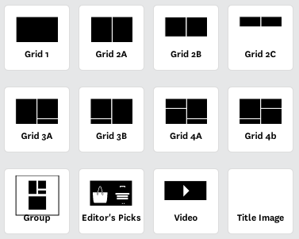

manages component configurations and pages
but really, it takes this...
and turns it into this...
(Image showing assets) // Include assets: CSS, JavaScript, Images, Templates
(image showing asets + scala) // And some scala code that hits up services to create ViewModels
package com.giltgroupe.web.render
/**
* The interface for all components. The idea is to only call
* "thing.render" in your views.
*/
trait Renderable {
def render: String
def renderJs: String = ""
}
This is what a component really is.

(Image of a wrapper around components) // Pages are component containers
There are moments, but...
/* All Pages extend this */
trait Scheduled {
def startTime: DateTime
def channels: Set[Channel]
}
trait Scheduler {
/* Returns the item with the most recent start time
* with the given channel. */
def findCurrent[T <: Scheduled](collection: Iterable[T],
channel: Channel) : Option[T]
/* Returns the item that is active for a specific date and time. */
def findForTime[T <: Scheduled](collection: Iterable[T],
channel: Channel,
dateTime: DateTime): Option[T]
/* Returns the current scheduled item, if there is one;
* or the next scheduled item (in the future). */
def findCurrentOrFuture[T <: Scheduled](collection: Iterable[T],
channel: Channel) : Option[T]
}
Take what we’ve done for Structured Sales and Showcase Detail and extend it to Mosaic and Homepage.
ninjas@gilt.com if you want to know more